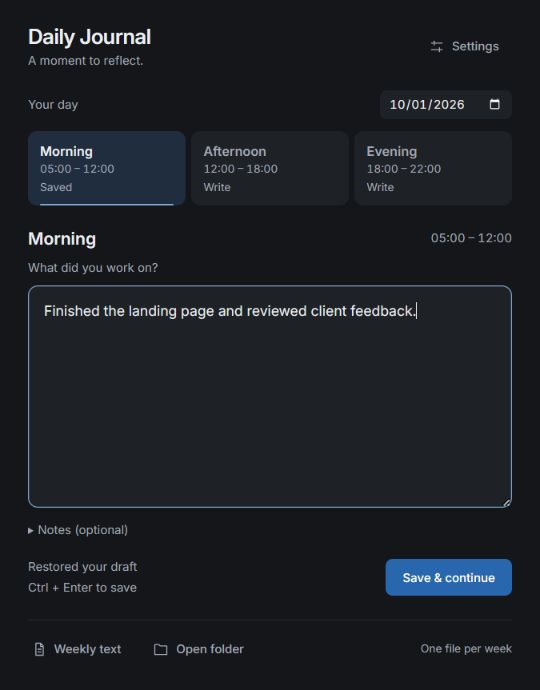
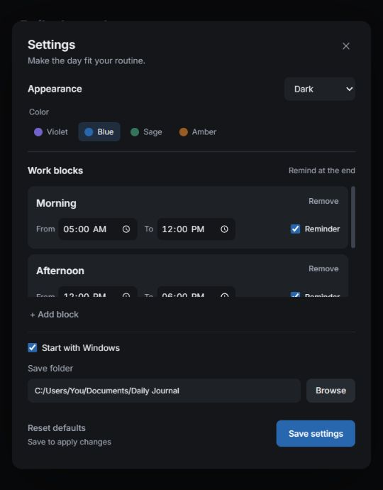

01
Choose
Choose a block
Click the tray icon to open the app. Choose Morning, Afternoon, or Evening, or use the date picker to catch up on earlier work.
Customizable block times
Record what you worked on in seconds, then get right back into flow. Daily Journal gathers short time-block check-ins into one weekly text digest tailored for personal reviews and deep AI reflection.

One focused box for your work. Notes only when needed. No bloated tickets or endless fields.
Save with Ctrl + Enter. The app quietly tucks back into your Windows tray.
Clean plain text files ready for instant retrospective coaching with any AI model you choose.
The Daily & Weekly Flow
From lightning-fast check-ins during your day to deep AI insights at the end of the week.
Click the tray icon to open the app. Choose Morning, Afternoon, or Evening, or use the date picker to catch up on earlier work.
Type a short sentence or a quick bullet list. Expand notes only for wins, blockers, or lessons learned. Unsaved drafts stay safely on your PC.
Press Ctrl + Enter or choose Save & continue. Your weekly file updates in milliseconds, and the window quietly returns to the tray.
The true magic of the system. At week's end, click Weekly text and feed your compiled notes into ChatGPT, Claude, or a local LLM for instant coaching, pattern discovery, and priorities.
Explore AI reflectionYour notes are stored on your disk as plain text. You decide when, what, and which AI model to share with.
Spot energy dips, chronic interruptions, recurring bottlenecks, and real wins that otherwise get forgotten.
Turn real work evidence into concrete, realistic goals for the upcoming Monday.
Click Weekly text in the app to find your week-YYYY-MM-DD.txt file. Attach the .txt file to your AI (ChatGPT, Claude, Gemini, or a local model) and use this prompt:
Review my work journal. Identify patterns in progress and interruptions, suggest three practical improvements, and help me choose priorities for next week. Distinguish evidence from assumptions.
Weekly work journal: 2026-09-28 to 2026-10-04
Date - 2026-10-01
Morning (05:00 - 12:00)
Work - Finished the landing page and reviewed
client feedback.
Notes - Best focus before checking messages.
Afternoon (12:00 - 18:00)
Work - Fixed two bugs and planned tomorrow.
Notes - Delayed by unplanned team sync.
Evening (18:00 - 22:00)
Work - Shipped release notes & tested build.
Tailored To You
Add, rename, or remove blocks. Set custom time intervals and choose which ones send subtle end-of-block notifications.
Reset defaults restores original blocks and appearance anytime. Your journals, drafts, and folders remain 100% intact.
Good to know
Download DailyJournal.exe, place it in any folder you prefer, and launch it. The app utilizes Microsoft Edge WebView2 (built into Windows 10 & 11). If missing, install the WebView2 Runtime . Then open Settings to choose your save folder and reminder times.
All entries are saved locally on your computer. The default folder is Documents/Daily Journal. Each week has a .txt file for reading/reflection and a companion .json file for editing through the app. Keep them together, and edit your entries in the app.
Yes. Select any previous date and block in the app, and save your updates. Editing replaces that specific block while preserving the rest of the week.
Closing the window minimizes Daily Journal into the system tray. Reminders trigger at each enabled block's end time while the app and Windows are active; already saved blocks are skipped silently. Reminders missed while the computer is off or asleep are not replayed.
No account, no tracking, and no hidden AI telemetry. The app is 100% offline. To get AI feedback, you have complete sovereignty: simply open your weekly text file and share it with whichever AI tool you trust (ChatGPT, Claude, Gemini, or a local model via Ollama).
Experience the simplicity of friction-free check-ins and the power of weekly AI reflections.